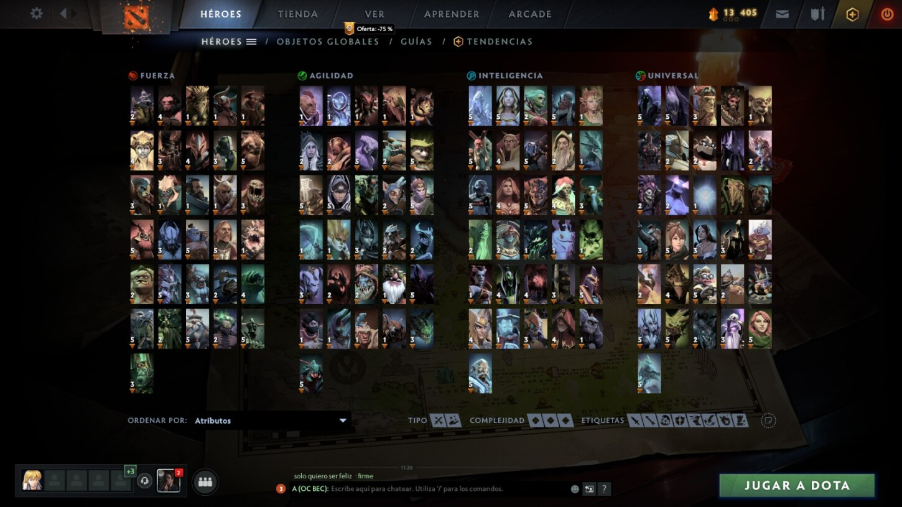

Tiene todo lo que probablemente esperabas: cambios en el equilibrio, objetos nuevos, rediseños de héroes y mejoras a la interfaz. Pero también hemos incluido algunos cambios que seguro no esperabas, como un nuevo tipo de atributo para héroes, y, prepárate, el mapa es ahora un 40 % más grande
Hemos expandido el mapa en las cuatro esquinas y agregado puertas gemelas con las que los jugadores pueden transportarse de un lado a otro.
También se agregan 8 observadores en el mapa que serán activados por los jugadores. Dota 2 aumenta 12 campos de monstruos neutrales y suma varios cambios a los tipos de creeps neutrales en el mapa.
La inmunidad mágica a sido cambiada a Inmunidad de debuffs, sumando nuevas mecánicas.
El nuevo atributo es “Universal”. Los héroes de este tipo ganan 0.6 de daño por cada atributo.
Se suman “Blood Grenade”, “Diadem”, “Cornucopia”, “Pavise”, “Disperser”, “Harpoon” y “Phylactery”.
También estrenará un nuevo sistema de emparejamiento en las partidas.